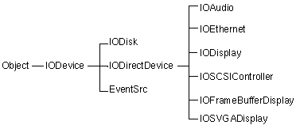
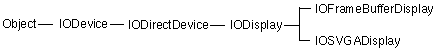

Copyright ©1995 by NeXT Computer, Inc. All Rights Reserved.
| 3 |
Support for Specific Devices
| Earlier chapters considered generic issues for all drivers. This chapter concentrates on the essentials of writing drivers for the following specific types of devices: |
| Display | ||
| Network | ||
| SCSI (both controllers and devices attached to controllers) | ||
| Sound |
| The section for each device type lists the development hardware needed. It indicates the basic operations required for such a device driver and provides some implementation suggestions.
Figure 3-1 shows the IODevice classes that you can use to write specific drivers. |
|  |
| Figure 3-1. Public IODevice Classes
The Driver Kit has special support for these devices although you can also write other kinds of drivers with the Driver Kit. In addition to device-specific classes, some kinds of drivers use non-IODevice classes that work with the IODevices. For example, network drivers typically use the IONetwork and IONetbufQueue classes. Examples of each driver type are located in /NextDeveloper/Examples/DriverKit. See also the examples located in /NextLibrary/Documentation/NextDev/Examples/DriverKit. |
| Development Support |
| You need support from these sources during driver development: |
| Hardware vendors. You may need new hardware or firmware. You also want advance notice of changes and information about new products. Support for drivers is an ongoing process. | ||
| Accurate and complete specifications for the hardware you're working with. Ancillary documentation such as support notes, technical notes, and sample code is also very useful. |
| Warnings |
| Driver development is hazardous to the health of your system. You will corrupt your kernel and hang your system during development, so be prepared to recover from these incidents. Furthermore, you'll most likely corrupt your system disk, so take these precautions: |
| Keep code and other critical resources off your development systems. | ||
| Have a plan for backup and rapid restoration of your disk's contents. |
| Display Devices |
| A driver for a display card is a subclass of one of these two classes: |
| IOFrameBufferDisplay, for cards that can linearly map the entire frame buffer | ||
| IOSVGADisplay, for other display cards |
| Figure 3-1 shows display device classes' position in the Driver Kit class hierarchy.
IOFrameBufferDisplay supports the following modes: |
| 2-bit grayscale | ||
| 8-bit grayscale | ||
| 8-bit color | ||
| 16-bit color (4 or 5 bits each for red, green, and blue, but only 4096 colors in either case) | ||
| 24-bit color (8 bits each for red, green, and blue). |
| IOSVGADisplay supports only 2-bit grayscale.
Note: All display cards with VGA support work with NEXTSTEP. Without special drivers, however, they have a small display area (640 Both classes support EISA and VL-Bus display cards. A limited number of ISA display cards are supported for performance reasons. PCI display cards are supported, but not PCMCIA display cards. Driver Kit display drivers are simpler than their DOS or WindowsTMcounterparts because they perform no graphics operations--the Window Server handles all graphics. See the IODisplay, IOFrameBufferDisplay, and IOSVGADisplay class specifications for additional information about how to implement a driver. Directories in /NextDeveloper/Examples/DriverKit with examples of video drivers include ATI, CirrusLogicGD542X, QVision, S3, and TsengLabsET4000. |
|  |
| Figure 3-2. Classes for Display Drivers
Development Requirements The following hardware is required or recommended for development and support efforts: |
| A workstation with NEXTSTEP User and Developer software | ||
| A second NEXTSTEP workstation for the target system (optional, but recommended) | ||
| Adapter hardware | ||
| Multisync monitor | ||
| Frequency counter (optional, but recommended) | ||
| Oscilloscope (optional) |
| Setting the Frame Buffer Address Range
If you implement an IOFrameBufferDisplay driver, you must supply the frame buffer memory range as the first range in the memory range list. This is normally done by placing this range as the first range of the "Memory Maps" key in Default.table. (You can also set this list with the setMemoryRangeList:num: method in IODeviceDescription.) The value should be the physical address memory byte range of the frame buffer. This range should be high in memory--above 2 GB, for example--to avoid conflicting with physical memory. On PCI-based systems, the BIOS attempts to allocate the frame buffer address range for you. The BIOS places this address range in the PCI configuration data but not in the device description, so you need to update the device description with this range. Furthermore, the BIOS doesn't always succeed in determining a valid frame buffer address, so you need to check the address. Follow these steps to check and set the frame buffer address range for PCI-based systems: |
| 1. | Get the memory ranges from the device description by invoking IODeviceDescription's memoryRangeList method. The frame buffer address range is the first one in the list--this is the range value provided in the Default.table. | |
| 2. | Get the PCI configuration space's frame address range, which was determined by the BIOS. Read the PCI configuration space by using the getPCIConfigData:atRegister:withDeviceDescription: method. Consult your device's hardware specifications to determine which PCI register holds the frame buffer address. | |
| 3. | Check that the range's starting address is greater than or equal to 4 MB and correctly aligned for your hardware. | |
| 4. | If the address is invalid, don't update the device description with this range. Instead, update the PCI configuration space with the range from the device description. Take the device description's address range you determined in the first step and write it to the PCI configuration space using the setPCIConfigData:atRegister:withDeviceDescription: method. | |
| 5. | If the address is valid, update the device description. Replace the first range in the list you obtained in step 1 with the range you got from the PCI configuration. Set the ranges with the setMemoryRangeList:num: method in IODeviceDescription. |
| You should go through these steps in your probe: method, prior to invoking initFromDeviceDescription:.
Basic Operations A display driver must perform the following basic operations: |
| Instantiating and initializing a driver object | ||
| Selecting the display mode | ||
| Reconfiguring display hardware for the selected display mode | ||
| Reverting to VGA display mode | ||
| Adjusting display brightness |
| Instantiating and Initializing a Driver Object
Override the probe: method in IODevice. Your probe: method should find and characterize the hardware. It must verify the presence and operation of the graphics controller (CRTC) and determine its revision. The probe: method should also determine the DAC type, the memory size, and the clock chip type, if necessary. For PCI-based drivers, probe: should check and set the frame buffer range address, as indicated in "Setting the Frame Buffer Address Range." It should create a driver instance of IOFrameBufferDisplay or IOSVGADisplay. If invalid values are found during verification, the method shouldn't create a driver instance but should send an appropriate diagnostic message and return NO. Note: Instead of using probe:, the current display driver examples use initFromDeviceDescription: to perform all this initialization, because they were written before the API was fully developed. The probe: method is preferred.
Selecting a Display Mode IOFrameBufferDisplay's method selectMode:count:valid: selects the display mode for you. To use it, you need to declare an IODisplayInfo array with one element per mode and initialize it, as in this example: |
 const IODisplayInfo QVisionModeTable[] = {
const IODisplayInfo QVisionModeTable[] = {
 /* 0: QVision 1024 x 768 x 8 (Mode 0x38) @ 60Hz. */
/* 0: QVision 1024 x 768 x 8 (Mode 0x38) @ 60Hz. */
 {
{
 1024, 768, 1024, 1024, 60, 0,
1024, 768, 1024, 1024, 60, 0,
 IO_8BitsPerPixel, IO_OneIsWhiteColorSpace, "WWWWWWWW",
IO_8BitsPerPixel, IO_OneIsWhiteColorSpace, "WWWWWWWW",
 0, (void *)&Mode_38_60Hz,
0, (void *)&Mode_38_60Hz,
 },
},
 /* 1: QVision 1024 x 768 x 8 (Mode 0x38) @ 66Hz. */
/* 1: QVision 1024 x 768 x 8 (Mode 0x38) @ 66Hz. */
 {
{
 1024, 768, 1024, 1024, 66, 0,
1024, 768, 1024, 1024, 66, 0,
 IO_8BitsPerPixel, IO_OneIsWhiteColorSpace, "WWWWWWWW",
IO_8BitsPerPixel, IO_OneIsWhiteColorSpace, "WWWWWWWW",
 0, (void *)&Mode_38_66Hz,
0, (void *)&Mode_38_66Hz,
 },
},
 }
}
| Declare an array of boolean values with one element per display mode and fill it. In the following example, italicized text delineated in angle brackets, that is << >>, is to be filled in with driver-specific code. |
 BOOL validModes[QVisionModeTableCount];
BOOL validModes[QVisionModeTableCount];
 for (k = 0; k < QVisionModeTableCount; k++) {
for (k = 0; k < QVisionModeTableCount; k++) {
 if (<< current hardware supports this mode >>)
if (<< current hardware supports this mode >>)
 validModes[k] = YES;
validModes[k] = YES;
 else
else
 validModes[k] = NO;
validModes[k] = NO;
 }
}
| Finally, send a message to select a mode and handle the result, as this code section illustrates: |
 mode = [self selectMode:QVisionModeTable count:QVisionModeTableCount
mode = [self selectMode:QVisionModeTable count:QVisionModeTableCount
 valid:validModes];
valid:validModes];
 if (mode < 0) {
if (mode < 0) {
 IOLog("%s: Sorry, cannot use requested display mode.\n",
IOLog("%s: Sorry, cannot use requested display mode.\n",
 [self name]);
[self name]);
 /*
/*
 * Pick a reasonable default
* Pick a reasonable default
 */
*/
 mode = DEFAULT_QVISION_MODE;
mode = DEFAULT_QVISION_MODE;
 }
}
| Reconfiguring Display Hardware for the Selected Display Mode
Using the appropriate commands for your display hardware, reconfigure it for the selected mode with these operations, the order of which is hardware-dependent: |
| Turn off the CRTC | ||
| Configure the CRTC | ||
| Configure the DAC | ||
| Configure the clock chip | ||
| Configure memory, if necessary | ||
| Restart the CRTC | ||
| Enable linear frame buffer mode |
| Reverting to VGA Display Mode
Return the adapter to the state it would be in after a hard reset, and, in the typical case, set VGA mode to 3.
Adjusting Display Brightness If the hardware supports changing the brightness of the display, implement the setBrightness:token: and use the setTransferTable:count: method to adjust it as desired. If the DAC supports downloading a color palette, override setTransferTable:count: to receive a gamma-corrected transfer table from the Window Server, or declare your own table in a static array. Override setBrightness:token: and then download the transfer table to the DAC. Look at an example of the setGammaTable method in one of the display driver examples in /NextDeveloper/Examples/DriverKit. Finally, indicate that you've implemented a transfer table by setting a flag: |
 displayInfo->flags |= IO_DISPLAY_HAS_TRANSFER_TABLE;
displayInfo->flags |= IO_DISPLAY_HAS_TRANSFER_TABLE;
| If the DAC doesn't support downloading a color palette, don't override these methods, and set the flag to indicate there's no transfer table: |
 displayInfo->flags |= IO_DISPLAY_NEEDS_SOFTWARE_GAMMA_CORRECTION;
displayInfo->flags |= IO_DISPLAY_NEEDS_SOFTWARE_GAMMA_CORRECTION;
| Network Devices |
| Two classes, IONetwork and IONetbufQueue, support all drivers that directly control networking hardware.
The Driver Kit contains special support for Ethernet and Token Ring drivers in two IODirectDevice subclasses--IOEthernet and IOTokenRing--from which you create a subclass to build your network driver. IOEthernet and IOTokenRing implement the hardware-independent code needed to control Ethernet and Token Ring cards. Figure 3-1 shows the network device classes relative to their superclasses. See the IOEthernet and IOTokenRing class descriptions for additional information on writing Ethernet and Token Ring drivers. /NextDeveloper/Examples/DriverKit/SMC16 contains a network driver example. |
 |
| Figure 3-3. Classes for Network Drivers
Development Requirements The following hardware is required or recommended for development and support efforts: |
| Two workstations with NEXTSTEP User software (mandatory--these serve as debug master and slave) | ||
| NEXTSTEP Developer software on one of the workstations | ||
| For Ethernet drivers, two supported Ethernet adapters, one of which supports NEXTSTEP kernel debugging (contact NeXT to get a list of qualifying adapters) | ||
| Target adapter hardware | ||
| Networking hardware (cables, tees, terminators, transceivers, and hub) to link the two workstations | ||
| Network analyzer (optional, but highly recommended) |
| Basic Operations
A network driver needs to support these operations: |
| Instantiating and initializing a driver object | ||
| Handling interrupts and timeouts | ||
| Cold initialization | ||
| Warm initialization | ||
| Transmitting | ||
| Receiving |
| Instantiating and Initializing a Driver Object
Override IODevice's probe: method. Your probe: method should find the hardware based upon a user-configured parameter such as an ID sequence or signature. This method must validate the device description passed to probe:, failing with a diagnostic message if any values are invalid. The probe: method should allocate an instance of IOEthernet or IOTokenRing, if necessary, and invoke initFromDeviceDescription: to initialize the instance. If it finds anything invalid in the hardware or device description, it shouldn't create a driver instance and should return NO.
Handling Interrupts and Timeouts Implement interruptOccurred and timeoutOccurred. The kernel invokes interruptOccurred from the I/O thread whenever the hardware interrupts and invokes timeoutOccurred when a timeout occurs.
Cold Initialization Cold initialization should perform any one-time initialization actions, such as reading the hardware address from ROM or allocating system memory for DMA buffers.
Warm Initialization Implement the resetAndEnable: method to prepare the hardware and software for network activity. This method should do the following: |
| Disable interrupts | ||
| Clear pending timeouts | ||
| Initialize hardware settings and software data structures | ||
| Cache physical addresses | ||
| Enable running by invoking setRunning: | ||
| Reenable interrupts if the enable parameter is YES |
| Transmitting
Depending on what your hardware supports, choose between using a single frame or a transmit queue. To transmit a frame, implement the transmit: method to follow these steps: |
| 1. | Queue the frame if it can't be processed immediately. | |
| 2. | Perform a software loopback if necessary using performLoopback:. | |
| 3. | Transfer the frame to the hardware. | |
| 4. | Free the frame's network buffer; you may need to do this in an interrupt handler. | |
| 5. | Set a timeout. | |
| 6. | Handle the transmit interrupt or timeout. | |
| 7. | Increment statistics such as number of frames sent, number of timeouts, and so on by invoking methods such as incrementOutputPackets in IONetwork. |
| Warning: | Never attempt to retransmit at the driver level. | |
| Receiving | ||
| To receive a packet, follow these steps: |
| 1. | Handle the receive interrupt, which indicates that a packet has been received. Incoming frames must be in a network buffer. You can allocate network buffers with nb_alloc() or use nb_alloc_wrapper() to wrap already allocated memory as a network buffer. Note that these functions can't be called at the interrupt level. | |
| 2. | Check that the network buffer size is correct. You can shrink it with nb_shrink_bot() if needed. | |
| 3. | Filter unwanted packets with isUnwantedMulticastPacket: in IOEthernet if the hardware doesn't provide filtering based on individual multicast addresses. | |
| 4. | Hand off the packet to the kernel by invoking handleInputPacket:extra: in IONetwork. This automatically invokes incrementInputPackets to increment that count. | |
| 5. | Update statistics appropriately using methods such as incrementInputErrors in IONetwork. |
| SCSI Controllers and Peripherals |
| You can write drivers for both SCSI controllers and SCSI peripherals with the Driver Kit.
Drivers for SCSI controllers should generally be implemented as subclasses of IOSCSIController. Drivers for SCSI devices are indirect drivers that are typically implemented as subclasses of IODevice. These indirect drivers use the IOSCSIControllerExported protocol to communicate with the SCSI controller driver object, which must conform to the IOSCSIControllerExported protocol. (Required protocols and the role they play in connecting drivers are discussed in Chapter 2.) Figure 3-1 illustrates the position of SCSI driver classes in the Driver Kit class hierarchy. For more information on writing a SCSI driver, see the IOSCSIController and IODevice class descriptions. An example of a SCSI controller driver is located in /NextDeveloper/Examples/DriverKit/Adaptec1542B. For an example of a SCSI tape drive controller, see /NextDeveloper/Examples/DriverKit/SCSITape. |
| Figure 3-4. Classes for SCSI Controllers
Development Requirements The following hardware is required or recommended for development and support efforts: |
| A workstation with NEXTSTEP User and Developer software | ||
| A second NEXTSTEP workstation with NEXTSTEP User software. This is strongly recommended: It's virtually guaranteed that you'll corrupt your disk. It's essentially mandatory if you're developing a boot driver. Furthermore, the second station allows you to debug the loaded driver at source level. Set up a procedure to quickly recover the contents of your disk. | ||
| SCSI Host adapter | ||
| Peripherals for testing the adapter: hard disk, CD-ROM, tape drive | ||
| SCSI analyzer |
| Basic SCSI Controller Driver Operations
The basic operations needed for a SCSI driver are the following: |
| Instantiating and initializing a driver object | ||
| Initiating commands | ||
| Handling interrupts and command completion | ||
| Handling timeouts |
| Instantiating and Initializing a Driver Object
Override IODevice's probe: and initFromDeviceDescription: methods. Implement probe: to test for system resources such as I/O ports and to verify the presence of hardware. If the hardware is present, create a driver instance and return YES. If invalid values are found during verification, probe: shouldn't create an instance; it should instead send an appropriate diagnostic message and return NO. Your initFromDeviceDescription: method must invoke super's implementation: |
 [super initFromDeviceDescription:deviceDescription];
[super initFromDeviceDescription:deviceDescription];
| IOSCSIController's initFromDeviceDescription: method starts up the default I/O thread provided by IODevice and initializes its instance variables. Your initFromDeviceDescription: method should initialize the hardware state and software structures such as queues and locks.
Initiating Commands Implement resetSCSIBus (in the IOSCSIControllerExported protocol) to reset the SCSI bus for your hardware. Implement executeRequest:buffer:client: (also in the IOSCSIControllerExported protocol). This exported method should convert the command and data (in the IOSCSIRequest struct passed to it) into the format for the specific hardware and place it in a command buffer. Enqueue the buffer in some well-known location--a queuing instance variable you define in your subclass, for example. Send a Mach message with the ID IO_COMMAND_MSG to the I/O thread's interrupt port to notify the I/O thread that it should execute a command that's been placed in global data. Wait for the command to complete; you can synchronize this with the I/O thread by using an NXConditionLock object in the command buffer. (For example, you set the lock to a CMD_READY state and then do a lockWhen:CMD_COMPLETE. The I/O thread sets the lock state to CMD_COMPLETE when it's done. See the example in Chapter 2.) Return SCSI and driver status. The commandRequestOccurred method is invoked by the I/O thread when it receives a Mach message with the ID IO_COMMAND_MSG. Implement this method to dequeue all commands that have been queued for execution. Send them to the host adapter, using the private methods and functions that you implement for your hardware. If the host adapter isn't able to accept all the enqueued commands, wait until an interrupt message arrives indicating that the host adapter has completed commands previously sent to it and may now accept more commands.
Handling Interrupts and Command Completion When the I/O thread receives a message with the ID IO_INTERRUPT_MSG, it invokes the interruptOccurred method against the driver instance. Your implementation of this method should find all commands that the host adapter has completed, mark their respective command buffers complete, and dequeue them. It should reinvoke the commandRequestOccurred method to process any remaining enqueued commands.
Handling Timeouts Just before the I/O thread tells the hardware to execute a command, it should call the IOScheduleFunc() function to arrange for a specified timeout function to be called at a certain time in the future. If the timeout function is called, it sends a Mach message with the ID IO_TIMEOUT_MSG to the I/O thread. The timeoutOccurred method is invoked by the I/O thread if it receives a message with the ID IO_TIMEOUT_MSG. Your implementation of this method should abort pending commands and reset the SCSI bus.
Other Considerations You need to consider a few other issues in implementing a SCSI driver.
Sending Messages to the I/O Thread During initialization, get the I/O thread's interrupt port: |
 port = [self interruptPort];
port = [self interruptPort];
| Also get the port's name in the kernel's IPC (inter process communication) name space: |
 ioTaskPort = IOConvertPort(port, IO_KernelIOTask, IO_Kernel);
ioTaskPort = IOConvertPort(port, IO_KernelIOTask, IO_Kernel);
| Use the msg_send_from_kernel() function to actually send a message from the timeout function or from executeRequest:buffer:client: to the I/O thread. You can't use msg_send() because when a driver executes outside the I/O task, it no longer has send rights to ports that it had in the I/O task. The same applies to any method or function that you specified in a call to IOScheduleFunc().
Alignment To specify the buffer allocation alignment restrictions that apply to your driver, all you need to do is implement the IOSCSIControllerExported protocol's method getDMAAlignment, which returns the DMA alignment requirements for the current architecture. This method must fill in all four fields of an IODMAAlignment structure that indicates buffer starting points and total length for reading and writing. Client drivers can use getDMAAlignment to obtain alignment requirements. They can then use the IOAlign() macro to determine how much memory they really need to allocate. These drivers should do the allocation with allocateBufferofLength:actualStart:actualLength: that allocates well-aligned memory, which is required for calls to executeRequest:buffer:client:.
Mapping Virtual Memory This is generally not a concern unless the driver itself must touch data, such as in programmed I/O. In these cases, use IOPhysicalFromVirtual() to get the physical address of the desired data. Of course, there's no guarantee that you can access every physical address--you only get a valid physical address if the memory is wired down. Use IOMapPhysicalIntoIOTask() to create a virtual address in the IOTask's virtual address space. Deallocate this virtual memory by calling IOUnmapPhysicalFromIOTask().
Maximum Data Transfer If you implement the method maxTransfer, it may simplify your design. Upper layers can use the value returned by this method to determine the maximum data transfer size your driver can handle. They won't try to send commands that attempt to transfer more data than the driver can handle.
Statistics A suite of methods such as maxQueueLength are available to return statistics used by iostat and other commands. The example located in /NextDeveloper/Examples/DriverKit/Adaptec1542B illustrates gathering these statistics.
SCSI Peripheral Drivers To write a SCSI peripheral device driver, create a subclass of IODevice. Use the methods in the IOSCSIControllerExported protocol to allow the SCSI peripheral driver object to talk to the SCSI controller object. Some of this protocol's key methods include: |
| executeRequest:buffer:client:, which sends SCSI commands to a peripheral device. | ||
| getDMAAlignment:, which returns DMA alignment requirements. | ||
| allocateBufferOfLength:actualStart:actualLength:, which allocates and returns a pointer to well-aligned memory, required for invoking executeRequest:buffer:client:. It's used with other alignment functions such as IOAlign() and getDMAAlignment:. | ||
| reserveTarget:lun:forOwner: and releaseTarget:lun:forOwner:, which respectively reserve and release a specified target/lun pair. | ||
| resetSCSIBus, which resets the SCSI bus. |
| Implement the probe: method to get the id of the SCSI controller object from the IODeviceDescription object that's handed to probe: as its parameter. In addition, probe: may send a SCSI INQUIRY command to each target/lun pair on its controller to see if a peripheral supported by the driver is connected to the SCSI bus. For every peripheral it finds, probe: should instantiate a SCSI peripheral driver object.
For an example of a SCSI tape drive controller, see /NextDeveloper/Examples/DriverKit/SCSITape. |
| Sound Devices |
| To write a driver for a sound device, create a subclass of IOAudio. See the IOAudio Class description for additional information on writing a driver.
Directories in /NextDeveloper/Examples/DriverKit with examples of sound drivers include ProAudioSpectrum16 and SoundBlaster8.
Development Requirements The following hardware is required or recommended for development and support efforts: |
| At least one workstation with NEXTSTEP User and Developer software | ||
| A second NEXTSTEP workstation (optional, but recommended. One can serve as debug master, the other slave. This allows source debugging of the loaded driver.) | ||
| Sound card | ||
| Microphone, headphones or amplifier, and speakers that are all known to work with the sound card | ||
| Logic analyzer |
| Basic Operations
Here are the basic operations needed for an audio driver: |
| Instantiating and initializing a driver object | ||
| Starting and stopping data transfers | ||
| Handling interrupts | ||
| Determining supported features | ||
| Changing hardware settings such as volume |
| Instantiating and Initializing a Driver Object
Override probe: to allocate an instance of the driver and initialize it by invoking IOAudio's initFromDeviceDescription: method. Override initFromDeviceDescription: method and invoke super's implementation. IOAudio's initFromDeviceDescription: method invokes the reset method, which you must implement to check whether hardware is present. If hardware is present, the method should set it to a known state. It should also configure the host DMA channel to auto initialize mode if the sound card supports it. (Otherwise, you'll have to restart the DMA transfer every time you handle an interrupt.) It should return nil if the hardware isn't present. If initFromDeviceDescription: returns nil, probe: shouldn't allocate a driver instance and should return NO.
Starting and Stopping Data Transfers Override IOAudio's startDMAForchannel:read:buffer:bufferSizeForInterrupts: method in your driver. Your method should do the following: |
| Configure your audio hardware to use the selected sample rate, data encoding, and channel count. | ||
| Set audio hardware to auto initialize mode, if possible. | ||
| Start the audio hardware's data transfer engine. | ||
| Enable interrupts and start the host master DMA. | ||
| Invoke IODirectDevice's startDMAForBuffer:channel: (part of the kernel), which you've configured to start the DMA on a selected channel. |
| Note: startDMAForchannel:read:buffer:bufferSizeForInterrupts: must be called only from the I/O thread.
Override IOAudio's stopDMAForChannel:read: method in your subclass to perform these operations: |
| Disable interrupts. | ||
| Turn off the DMA channel. | ||
| Stop any data transfer from the audio hardware. |
| Handling Interrupts
The Driver Kit already implements an interrupt handler for sound. You must implement the method interruptOccurredForInput:forOutput: to take these actions: |
| Determine which, if any, channel interrupted and perform the necessary actions to acknowledge the interrupt. | ||
| Return BOOL values in each of the method's two BOOL parameters: YES if there is data in the corresponding channel and NO otherwise. |
| Note: The interruptOccurredForInput:forOutput: method must be called only from the I/O thread.
Write a function that clears audio hardware interrupts and implement interruptClearFunc to return the address of this function. This function is called by the interrupt handler when there's an audio interrupt, so it can't block.
Determining Supported Features Implement the following methods to provide the following feature information: |
| acceptsContinuousSamplingRates to return whether continuous sampling rates is supported | ||
| channelCountLimit to return 1 for mono or 2 for stereo | ||
| getDataEncodings:count: to return an array of supported data encodings | ||
| getInputChannelBuffer:size: to return the input channel's buffer address and size | ||
| getOuputChannelBuffer:size: to return the output channel's buffer address and size | ||
| getSamplingRates:count: to return supported sampling rates in an array and a count of the number of rates supported | ||
| getSamplingRatesLow:high: to return the lowest and highest sampling rates supported |
| Setting Hardware State
The user can set various audio parameters. IOAudio has a set of methods that return the values set by the user. You implement an accompanying set of methods to convert these user values to values your hardware understands by scaling the values appropriately and updating the hardware state to the scaled values. Implement the methods if the audio hardware supports the corresponding features. IOAudio provides the following methods to get the user value and update the associated hardware state: |
| inputGainLeft and updateInputGainLeft | ||
| inputGainRight and updateInputGainRight | ||
| isLoudnessEnhanced and updateLoudnessEnhanced | ||
| isOutputMuted and updateOutputMute | ||
| outputAttenuationLeft and updateOutputAttenuationLeft | ||
| outputAttenuationRight and updateOutputAttenuationRight |
| Input gain runs from 0 (no sound) to 32767 (maximum); attenuation goes from Note: IOAudio invokes all the update... methods from the I/O thread.
Caveat IOAudio's support for audio drivers has the following limitation you should know about: |
| You can't override the methods (dataEncoding and getDataEncodings:count:, for example) that interpret NXSoundParameterTags passed from user-level programs. Consequently, you have to use some other way to provide support for device-specific features such as on-board compression. |
| Suggestions for Development
If the audio hardware supports a superset of a well-known interface, consider developing it first. It's even better if a template is available. Then add features specific to your audio hardware. When you start debugging, first try to get an interrupt. When you do, you know data transfers are occurring. As a debugging aid, consider writing a user-level program to use IODeviceMaster to read and write ports. |